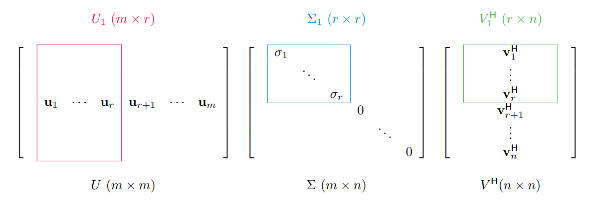
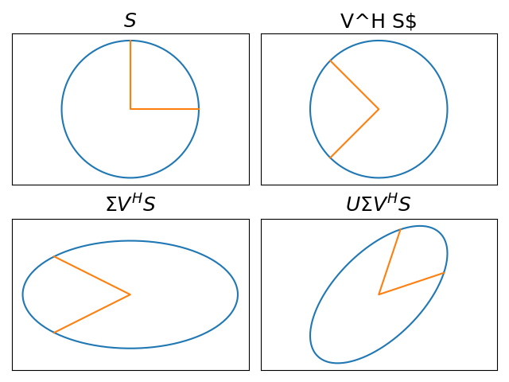
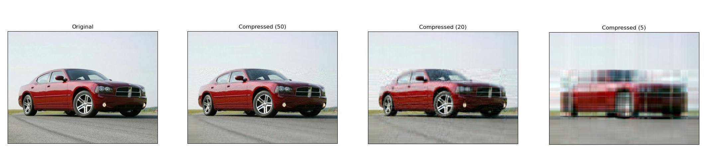

Unlocking the Secrets of Image Compression with Vectors
An image compression algorithm powered by singular value decomposition (SVD) | View Code
"Mathematics is the art of reducing any problem to linear algebra."
- William Stein
Why Compression Matters
In today's digital age, images are an integral part of our lives, from personal photographs to business marketing materials. However, as image files become more complex and high-resolution, their file sizes also increase, causing problems such as slow loading times, limited storage space, and high data transfer costs. Image compression techniques provide a handy solution to this problem by reducing file sizes while preserving image quality.
Linear algebra provides a valuable set of tools for image compression techniques. The SVD algorithm in particular has become a powerful resource for this task. By breaking an image down into its constituent parts, SVD can identify the most critical information within an image and store it more efficiently, resulting in smaller files without sacrificing essential details. This modification allows for faster loading times, lower storage requirements, and more cost-effective data transfer, making image compression an essential component of modern computing and communication technologies.
How to Manipulate Images
When we take a digital image, our cameras capture the photo in the form of a grid of pixels, with each pixel assigned a color value. These values are then stored as a matrix on our computers, where the matrix is essentially a table of numbers that represent the colors of each pixel. The dimensions of this matrix are M x N x 3, where M is the height of the matrix, N is its width, and 3 represents the three color channels of red, green, and blue, which are used to create the full spectrum of colors visible to the human eye.
Each entry in the matrix corresponds to a specific pixel in the image, and the values of the entries indicate the intensity of the respective color channels at that pixel. By using matrix representation, computers can efficiently process and store images, and image compression techniques like SVD can help optimize this process by identifying and preserving the essential information in the matrix while reducing the overall file size.
Singular Value Decomposition
The singular value decomposition (SVD) of a matrix allows us to decompose a matrix into its fundamental building blocks: orthonormal (perpendicular) columns, diagonal singular values, and orthonormal rows. In other words, it provides a way to break down a complex matrix into simpler components, which can then be more easily understood and manipulated.
The SVD works because it identifies the most important features of a matrix. The singular values, which are the diagonal entries of the Σ matrix, tell us how much each column and row of the matrix contributes to its overall structure. The larger the singular value, the more important that component is to the matrix as a whole. Moreover, the singular values are always non-negative, which gives us a natural way to rank the importance of the components.
We can identify the most important components of a matrix by sorting the singular values in decreasing order. The first r columns of U and V span the range and null space of A, respectively, and the corresponding singular values σi tell us how important each of these components is to the matrix. The range is the collection of all possible outputs of the matrix A, while the nullspace is the collection of all inputs that map to zero. The SVD also provides an outer product expansion (a special type of matrix multiplication) of A in terms of the singular values and the columns of U and V.
The SVD works by breaking down a matrix transformation into three key components: two rotations and a scaling.
- The first rotation, represented by the matrix U, rotates the vector in Rn (a space with n dimensions) to a new position.
- The second rotation, represented by the matrix VH, then rotates the vector again, this time in Rm. These two rotations work together to give us a clear understanding of how the original vector has been transformed.
- The scaling is represented by the matrix Σ, which scales the vector along the principal axes. This rescaling is critical to understanding the impact of the transformation on the vector.
Together, the three components of the SVD give us a clear geometric picture of the linear transformation defined by matrix A. By applying the two rotations and the scaling in sequence, we can easily describe the transformation and understand its impact on any vector in Rn.
The beauty of the SVD lies in its simplicity and elegance. By decomposing a complex linear transformation into its fundamental building blocks, we gain a deeper understanding of how it works and how we can manipulate it to our advantage. This has profound implications in fields such as image compression, signal processing, and data analysis, where understanding the geometry of a transformation is essential.
Data Compression
The SVD also allows us to compress data in general without losing significant information. By decomposing a matrix into two rotations and a scaling, the SVD allows us to store only a subset of the matrix's values, significantly reducing its memory footprint. The compact SVD takes this a step further by only keeping the most important information, corresponding to the largest singular values. This approximation can be thought of as a compressed version of the original matrix, and it is remarkably accurate. It is especially useful in cases where the matrix has a low rank (has redundant information) because it allows us to identify the most important components and discard the rest.
def svd_approx(A, s):
"""Return the best rank s approximation to A with respect to the 2-norm
and the Frobenius norm, along with the number of bytes needed to store
the approximation via the truncated SVD.
Parameters:
A ((m,n), ndarray)
s (int): The rank of the desired approximation.
Returns:
((m,n), ndarray) The best rank s approximation of A.
(int) The number of entries needed to store the truncated SVD.
"""
# get the SVD of A and compact it using s
U, W, V = la.svd(A)
if s > len(W):
raise ValueError("Rank request is too big")
UHat = U[:,:s]
WHat = W[:s]
VHat = V[:s,:]
# calculate the number of elements to store and return compressed A
size = UHat.size + WHat.size + VHat.size
return UHat @ np.diag(WHat) @ VHat, size
In fact, the compact SVD provides the best possible approximation of a matrix of a given rank, with respect to both the 2-norm and the Frobenius norm (methods of abstractly measuring distance and size). By using the SVD to compress data, we can store and analyze large datasets more efficiently, making it possible to perform complex computations on data that would otherwise be too large to handle.
Image Compression
Images are a ubiquitous form of visual data, and storing and transmitting large image files can be a daunting task. However, by compressing an image into a low-rank SVD approximation, we can significantly reduce the amount of data that needs to be stored or transmitted.
Moreover, the SVD allows us to selectively retain important features of the image, such as its structure and texture, while discarding minor details that may not be as important. We can achieve this by analyzing the singular values of the image, which give us insight into its rank and level of detail. By discarding smaller singular values, we can construct a compressed image that retains the essential features of the original, but with a significantly lower storage size.
Displayed below are several approximations of an image of a car at various low ranks. Despite having a reduced rank, the image remains easily recognizable. At a rank of 120, the approximation is nearly identical to the original image. In the case of an image, you can think of the rank as the number of columns of pixels which was originally 236.
Constructing a Dataset of Images
During the development of my used car web scraper project, I encountered a challenge while attempting to store all the car images I found online. The sheer volume quickly became overwhelming. While there were existing packages available for image compression, I was excited to apply a technique I had recently learned, so I implemented a resizing and compression class called Compressor that reduced the images to a rank of 100.
for elem in imageElems:
# get the link to the element
src = elem.get_attribute('src')
# build a name for the image based on its alt text
alt = "_".join(elem.get_attribute('alt').split())
path = "Images/" + alt + ".png"
# save the image
try:
urllib.request.urlretrieve(src, path)
except URLError as ex:
print("Error retrieving image")
print(path)
print(ex)
# compress with image with our custom compression algorithm try:
Compresser.compress_image(path, self.compression)
images.append(alt)
…
This level of detail struck a perfect balance for my application—clear enough for visual clarity, yet compact enough to support the damage classification system I later developed. It was a small addition, but it made a significant impact, saving me a substantial amount of storage space. I'm delighted to have acquired this knowledge and put it to practical use in my project.
If you'd like to view the source code for image compression, visit my GitHub!